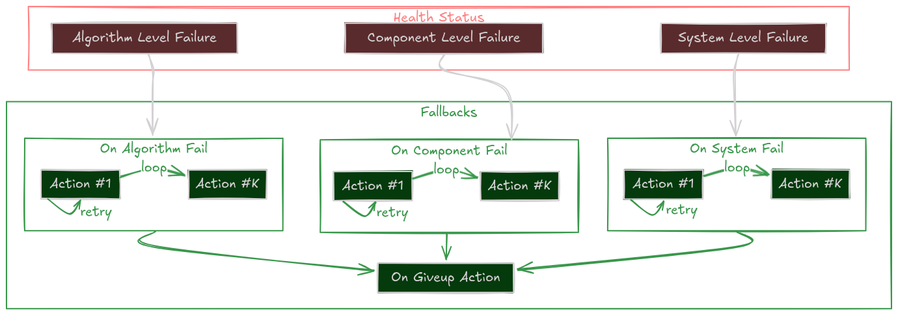

Fallbacks¶
All robots can fail, but smart robots recover.
Fallbacks are the Self-Healing Mechanism of a Sugarcoat component. They define the specific set of Actions to execute automatically when a failure is detected in the component’s Health Status.
Instead of crashing or freezing when an error occurs, a Component can be configured to attempt intelligent recovery strategies:
Algorithm stuck? \(\rightarrow\) Switch to a simpler backup.
Driver disconnected? \(\rightarrow\) Re-initialize the hardware.
Sensor timeout? \(\rightarrow\) Restart the node.


The Self-Healing Loop¶
The Recovery Hierarchy¶
When a component reports a failure, Sugarcoat doesn’t just panic. It checks for a registered fallback strategy in a specific order of priority.
This allows you to define granular responses for different types of errors.
1. System Failure
on_system_failThe Context is Broken. External failures like missing input topics or disk full. Example Strategy: Wait for data, or restart the data pipeline.2. Component Failure
on_component_failThe Node is Broken. Internal crashes or hardware disconnects. Example Strategy: Restart the component lifecycle or re-initialize drivers.3. Algorithm Failure
on_algorithm_failThe Logic is Broken. The code ran but couldn’t solve the problem (e.g., path not found). Example Strategy: Reconfigure parameters (looser tolerance) or switch algorithms.4. Catch-All
on_failGeneric Safety Net. If no specific handler is found above, this fallback is executed. Example Strategy: Log an error or stop the robot.
Recovery Strategies¶
A Fallback isn’t just a single function call. It is a robust policy defined by Actions and Retries.
1. The Persistent Retry (Single Action)¶
Try, try again.
The system executes the action repeatedly until it returns True (success) or max_retries is reached.
# Try to restart the driver up to 3 times
driver.on_component_fail(fallback=restart(component=driver), max_retries=3)
2. The Escalation Ladder (List of Actions)¶
If at first you don’t succeed, try something stronger. You can define a sequence of actions. If the first one fails (after its retries), the system moves to the next one.
Clear Costmaps (Low cost, fast)
Reconfigure Planner (Medium cost)
Restart Planner Node (High cost, slow)
# Tiered Recovery for a Navigation Planner
planner.on_algorithm_fail(
fallback=[
Action(method=planner.clear_costmaps), # Step 1
Action(method=planner.switch_to_fallback), # Step 2
restart(component=planner) # Step 3
],
max_retries=1 # Try each step once before escalating
)
3. The “Give Up” State¶
If all strategies fail (all retries of all actions exhausted), the component enters the Give Up state and executes the on_giveup action. This is the “End of Line”, usually used to park the robot safely or alert a human.
How to Implement Fallbacks¶
Method A: In Your Recipe (Recommended)¶
You can configure fallbacks externally without touching the component code. This makes your system modular and reusable.
from ros_sugar.actions import restart, log
# 1. Define component
lidar = BaseComponent(component_name='lidar_driver')
# 2. Attach Fallbacks
# If it crashes, restart it (Unlimited retries)
lidar.on_component_fail(fallback=restart(component=lidar))
# If data is missing (System), just log it and wait
lidar.on_system_fail(fallback=log(msg="Waiting for Lidar data..."))
# If all else fails, scream
lidar.on_giveup(fallback=log(msg="LIDAR IS DEAD. STOPPING ROBOT."))
Method B: In Component Class (Advanced)¶
For tightly coupled recovery logic (like re-handshaking a specific serial protocol), you can define custom fallback methods inside your class.
Tip
Use the @component_fallback decorator. It ensures the method is only called when the component is in a valid state to handle it.
from ros_sugar.core import BaseComponent, component_fallback
from ros_sugar.core import Action
class MyDriver(BaseComponent):
def __init__(self, *args, **kwargs):
super().__init__(*args, **kwargs)
# Register the custom fallback internally
self.on_system_fail(
fallback=Action(self.try_reconnect),
max_retries=3
)
def _execution_step(self):
try:
self.hw.read()
self.health_status.set_healthy()
except ConnectionError:
# This trigger starts the fallback loop!
self.health_status.set_fail_system()
@component_fallback
def try_reconnect(self) -> bool:
"""Custom recovery logic"""
self.get_logger().info("Attempting handshake...")
if self.hw.connect():
return True # Recovery Succeeded!
return False # Recovery Failed, will retry...